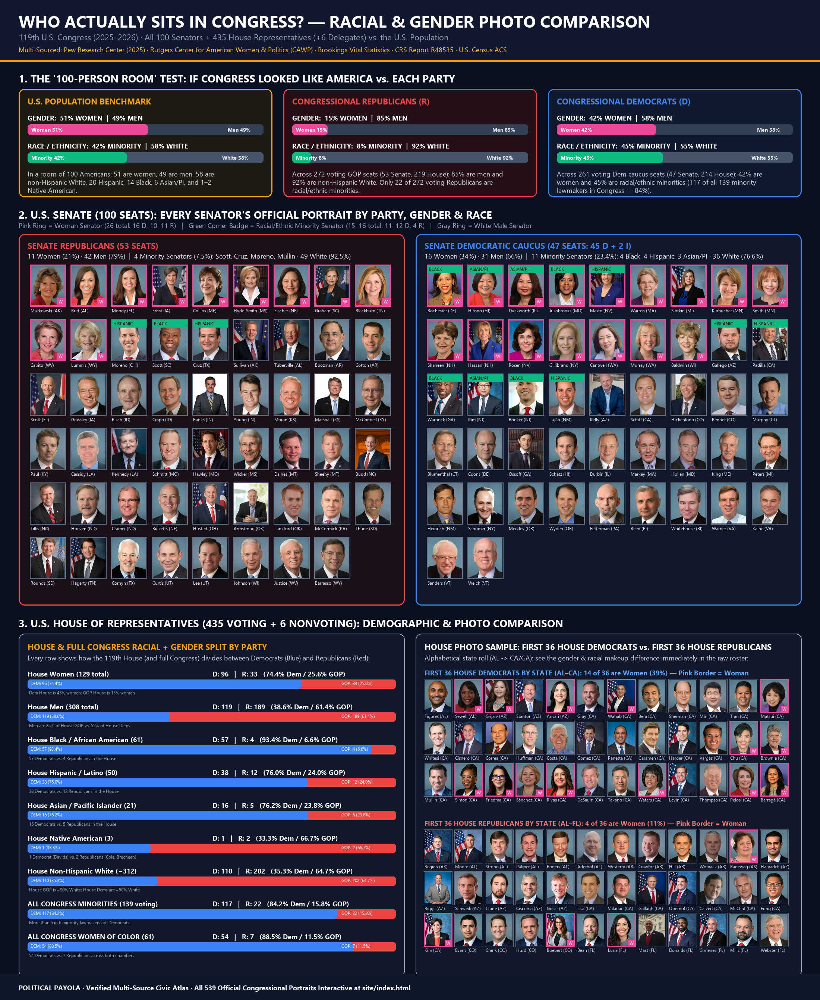

A. Modern Presidents (Reagan to Now): Vacation & Personal Days Away Per Term
Showing BOTH narrow vacation/personal-residence days (excl. Camp David) AND total days away (incl. Camp David, weekend homes & personal resorts) so neither party can cherry-pick definitions.
| # | President & Party | Term & Years | Vacation / Personal Residence Days (Excl. Camp David) | Total Days Away (Incl. Camp David / Home Weekends) | Camp David | Primary Retreats / Properties | Multi-Source Verification |
|---|
B. Top 10 States with Highest Domestic Violence (Intimate Partner Violence) Rates
Multi-Sourced: American Journal of Preventive Medicine (Merrick et al.), UCLA Center for Health Policy Research, CDC NISVS State Reports (2010–2012 & 2016/2017–2024 cohorts), World Population Review & NCADV / Break the Cycle Shelter Audit. Top-10 Party Split: 6 Republican Trifectas, 3 Divided States (won by Trump in 2024), 2 Democratic Trifectas.
| Rank | State | Party Control & 2024 Vote | Women Lifetime IPV % | Men Lifetime IPV % | Combined IPV % | NISVS 2016/17 Cohort (Women) | Unmet Daily Shelter Requests | Sources |
|---|
C. Top 10 States with Highest Poverty Rates (2024–2025)
Multi-Sourced: U.S. Census Bureau SAIPE / ACS, Columbia University Center on Poverty and Social Policy & KFF. Top-10 Party Split (incl. 10th-place tie): 7 Republican Trifectas, 2 Divided States (won by Trump in 2024: KY, MI), 2 Democratic Trifectas (NM, NY).
| Rank | State | Party Control & 2024 Vote | Poverty Rate (All Ages) | Year | Plain-English Summary | Sources |
|---|
D. Top 10 States for K-12 School Shootings (Raw Incident Count vs. Per-Capita Rate)
Multi-Sourced: Naval Postgraduate School CHDS K-12 School Shooting Database (Riedman 2025/2026), KFF Health Policy Research (Panchal et al.), New England Journal of Medicine (Goldstick et al.), and Gun Violence Archive. Raw counts track population size; per-capita rates highlight high-incidence smaller states.
| Rank | By Total Incidents (1966–2026) | Cumulative & Recent (2013–2025) | Rate / 100k | By Per-Capita Rate (50 States) | Incidents per 100,000 Residents | Sources |
|---|
E. Top 10 States for Mass Shootings (4+ Shot Excluding Shooter — Total vs. Per-Capita Rate)
Multi-Sourced: Peer-reviewed study in JAMA Network Open (Barnard et al. 2023, Univ. of Colorado Injury & Violence Prevention Center, PMC10372703, analyzing 4,011 mass shootings & 21,006 casualties across 2014–2022) + Gun Violence Archive 2024–2026 logs. Per-Capita Top 10 (50 States): 6 Republican Trifectas (LA, MS, AL, MO, SC, TN), 3 Democratic Trifectas (IL, MD, DE), 1 Divided (PA).
| Rank | By Total Mass Shootings | 2014–2022 Total (& 2024 Count / Casualties) | Rate / 1M | By Per-Capita Rate (per 1M Residents) | Rate per Million & Casualties | Sources |
|---|
F. Top 10 States Most Negatively Impacted by Mass Deportation
Multi-Sourced: Pew Research Center (Passel & Krogstad, Aug 2025 state labor force & household tables), American Immigration Council (2024/2025 economic & tax modeling: -4.2% to -6.8% U.S. GDP, $1.1T–$1.7T/yr loss), Peterson Institute for International Economics (PIIE Working Paper 24-20: up to -7.4% GDP & +9.1% inflation), and NBER / Journal of Labor Economics (East et al. 2023).
| Rank | State | Party Control & 2024 Vote | % of State Workforce Lost | Unauthorized Workers Removed | Total Residents & Household Share | K-12 Students Impacted | Hardest-Hit Industries | Sources |
|---|
A. U.S. Demographics & How America Votes Since Reagan (1980–2024): Race, Gender & Age
Official U.S. Census Bureau population & voter composition paired with Pew Research Center Validated Voters and National Exit Poll two-party splits (Red = Republican % · Blue = Democrat %) across all 12 presidential elections from Ronald Reagan (1980) to 2024.
| Year & Matchup | U.S. Pop & Voter Racial Makeup | Vote by Race (R% vs. D%) | Vote by Gender (Men / Women) | Vote by Age (18–29 / 30–44 / 45–59 / 60+) |
|---|
B. 119th U.S. Congress (2025–2026): Racial & Gender Photo Comparison
High-resolution editorial infographic + live filterable photo wall of all 539 official portraits (Senators, House Representatives & Delegates). Sources: Pew Research Center (2025), Rutgers CAWP, Brookings Vital Statistics, CRS Report R48535.

50-State Rankings & Party Correlation Explorer
Select any of 25+ verified state metrics to see the full 50-state ranking, the Republican vs. Democratic count in the Top 10, and direct source links.
| Rank | State | Party Control & 2024 Vote | Value | Period | Plain-English Explanation | Sources |
|---|
A. Active & Past Bills Impacting American Families: Top 10 / Top 20 Lists, Roll-Call Votes & Flowcharts
Plain-English investigative tracker showing active bills in Washington DC right now (119th Congress, 2025–2026) and past landmark laws (1981–2025) that directly impact family paychecks, healthcare, groceries, student loans, bank fees, and retirement. Track who sponsored each bill, how Republicans and Democrats voted, and how your own local Representatives and Senators voted.
Simple Visual Flowcharts: How a Washington Bill Hits Your Community, Household & Paycheck
Click any pathway below to trace how Congress & donor money affect your kitchen table:Check Your Local Politicians: Who Represents Your State, Who Funds Them & How Their Party Votes
Select your state to see your 2 U.S. Senators and House Representatives, their party, whether they rank in the Top 25 for corporate/PAC money, and how their party caucus voted on the family bills below.
Galvanize for Real Change: Petitions, Numbers & Direct Representative Contact
When enough voters galvanize behind verifiable facts, policy shifts. Use this platform to hold lawmakers accountable: contact your representatives directly regarding upcoming legislation, sign verified citizen petitions on healthcare and cost-of-living, or launch a grassroots community action initiative.
Protect Medicaid Funding & Cap Prescription Drug Costs
Petition Congress to reject federal Medicaid block grants and protect the $2,000 yearly Medicare drug cap.
Enforce the $5 Overdraft Fee Cap on Megabanks
Directly petition the Senate Banking Committee to uphold CFPB caps saving American families $5B annually.
End Dark Money & Unlimited Corporate Committee Cash
Require instant 24-hour donor disclosure for all PAC contributions over $1,000 on federal elections.
B. 36 Landmark Federal Laws Since 1981: What They Did, Who Voted Yea/Nay & CBO Cost
Every major tax, healthcare, crime, trade, financial, infrastructure, and reconciliation bill from Ronald Reagan's 1981 tax cut to the 2025 reconciliation act.
Formal Congressional Misconduct, Major Corruption Scandals & Top-20 Labor/Police Unions
Formal outcomes only (convictions, guilty pleas, expulsions, censures, ethics findings) + PAC contributions & presidential endorsements from top labor, police (FOP, NAPO, IUPA) & firefighter (IAFF) unions.
Top 25 Politicians Receiving the Most Donor / Corporate (PAC) Money — 2024 Cycle
Official FEC figures for "other political committee contributions" (PAC, corporate & trade-association committees) to each member of Congress, ranked highest-to-lowest, with each lawmaker's party. Sorted by total PAC/committee dollars received in the 2024 election cycle. Party split in the Top 25: 13 Republicans, 11 Democrats, 1 Independent.
| # | Lawmaker & Party | Chamber | PAC / Corporate Money | % of Total Raised | Total Receipts | FEC Record |
|---|
Major Corruption Scandals & Congressional Convictions / Censures
Top-20 Unions: Federal PAC Contributions (D vs. R) & Endorsements
| Union & Metric | Cycle | Amount / Endorsement | Plain-English Summary | Sources |
|---|